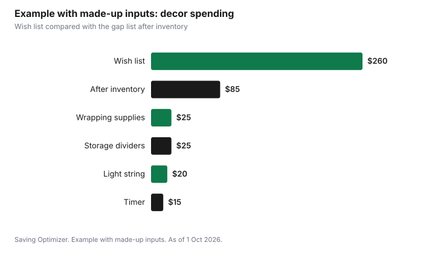

Events · Canada
Holiday Decorations Without Overspending: Reuse, After-Holiday Sales and Storage

The cheapest holiday decorations are the ones you already own. Before buying anything, take every box out, test the lights, count what works and write a short list of real gaps. Buy only what is on the list, with a cap. If you want to refresh your decor, buy next year's items in the days after the holiday, when many stores mark down seasonal stock, and store everything in labelled bins so it survives to be used again. Most overspending on decorations comes from buying duplicates of things already in the basement and replacing things that broke in storage.
Key takeaways
- Take inventory before you shop: count, test and photograph what you have.
- Write a gap list with a cap. Buy only from the list.
- After-holiday sales suit next year's items you already know you need, not impulse buys.
- Test light strings before decorating and compare wattage on the box when buying new ones.
- DIY decor from greenery, paper and jars costs little and can be composted or recycled.
- Example with made-up inputs: a $260 wish list becomes $85 after an inventory.
Taking inventory
Inventory is a twenty-minute job that saves the most money. Bring every decor box to one room. Sort items into four piles: use this year, needs repair, give away, and throw out. Plug in every light string. Count ornaments, hooks, extension cords and timers. Take a photo of each box's contents and keep it on your phone, so you can check what you have when you are standing in a store.
| Item | Count | Working | Needs repair | Gap to fill |
|---|---|---|---|---|
| Indoor light strings | ||||
| Outdoor light strings | ||||
| Extension cords and timers | ||||
| Ornaments | ||||
| Ornament hooks | ||||
| Wreath, garland | ||||
| Tree stand or tree | ||||
| Wrapping paper, ribbon, tags |
If you have far more than you use, give some away. A buy-nothing group or a charity shop will often take decor in good condition; see buy-nothing groups.
After-holiday sales
Seasonal stock is often discounted after the holiday, as stores clear shelf space. That can be a good time to replace a broken light string or buy wrapping paper for next year. It is not a good time to buy decor you do not need because it looks cheap. Use the same gap list: if an item is not on it, skip it. Stores and timing vary, so check flyers rather than assuming a particular discount.
| Good buys | Traps |
|---|---|
| A replacement for a light string that failed | A second set of the same ornaments |
| Wrapping paper, tags and ribbon for next year | Decor in a new colour scheme you will tire of |
| Storage bins and ornament dividers | Large inflatables you have nowhere to store |
| Batteries or timers you know you need | Items bought only because they are discounted |
The guide to Black Friday versus Boxing Day covers timing for larger items in the same season.
LED lights
Lights are where safety and running cost meet. Test every string before it goes on the tree or the house, and throw out any with cracked sockets or damaged wires. Use lights rated for indoor use inside and outdoor-rated lights outside. If you buy new strings, compare the wattage printed on each box; a lower wattage uses less electricity for every hour the lights are on. A plug-in timer turns lights off overnight and costs little, and it removes the chance of leaving them on for days.
- Test strings on the floor before putting them up.
- Replace damaged strings rather than repairing frayed wire.
- Do not link more strings end to end than the manufacturer allows.
- Use a timer so lights are off overnight and when no one is home.
- Keep cords out of walkways and away from water.
DIY decor
Simple homemade decor often looks better than mass-produced items and costs very little. Evergreen branches trimmed from a real tree or from your yard, pine cones, paper snowflakes, popcorn or paper garlands, and candles in jars can fill a table or a mantel. Children can make ornaments from salt dough or paper, which become keepsakes. Natural decor can usually go into the organics or yard waste after the holiday, depending on your city's rules; check before you set it out.
Storage that prevents damage
Decor that breaks in storage has to be bought again. A little care at packing time makes it last for years.
| Item | How to store | Why |
|---|---|---|
| Light strings | Wrap around a piece of cardboard or a reel | Prevents tangles and broken bulbs |
| Glass ornaments | Egg cartons or a bin with dividers | Prevents breakage |
| Wreaths | Hang in a bag or store flat in a box | Keeps the shape |
| Fabric decor | Sealed bin with a dry cloth | Keeps out moisture and pests |
| Wrapping supplies | Upright tube or bin | Prevents crushing |
| Every box | Label the contents on two sides | Find things fast next year |
Store bins in a cool, dry place off the floor. Basements that flood or attics that get very hot can damage lights and ornaments. Put the boxes you open first, such as lights and the tree stand, at the front.
Getting rid of decor you no longer want
Disposal rules are set by each city, so check your municipality's waste page before setting decor at the curb. In Toronto, the City collects real Christmas trees curbside on designated days in January and asks residents to remove all lights, tinsel and decorations and not to put the tree in a bag. An artificial tree should be taken apart, if possible, and set out as an oversized item on garbage day. For broken light strings, check whether your city takes them at an electronics or special-waste drop-off rather than in the blue bin. Usable decor is better given away than thrown out, and someone in a buy-nothing group may need exactly what you are clearing.
Example with made-up inputs: from wish list to gap list
These numbers are an example with made-up inputs. They are not store prices. A household writes a first wish list of new decor: three light strings ($60), a new set of ornaments ($50), a wreath ($45), an outdoor inflatable ($80) and wrapping supplies ($25), for $260. After the inventory, they find two working light strings, so they need one ($20). They have plenty of ornaments. Last year's wreath is fine. They skip the inflatable. They buy wrapping supplies ($25), a timer ($15) and ornament storage dividers ($25). The new total is $85.
| Item | Wish list | After inventory |
|---|---|---|
| Light strings | $60 (3) | $20 (1) |
| Ornaments | $50 | $0 |
| Wreath | $45 | $0 |
| Outdoor inflatable | $80 | $0 |
| Wrapping supplies | $25 | $25 |
| Timer | — | $15 |
| Storage dividers | — | $25 |
| Total | $260 | $85 |

Plan
- Early November: bring out all decor, test lights and fill in the inventory sheet.
- Write a gap list with a cap and buy only from it.
- Make a few DIY items with the household.
- Set lights on timers.
- After the holiday: buy replacements on your list if they are discounted.
- Pack carefully, label boxes and note next year's gaps on the inventory sheet.
If the tree is on your list, see real versus artificial tree. For the whole season's spending, use the December spending plan.
Sources
- City of Toronto, Yard Waste, toronto.ca, as of 1 Oct 2026. Christmas trees collected on designated January days; remove lights, tinsel and decorations; no bags; artificial trees taken apart and set out as oversized items.
- The inventory sheet, storage table and buying table are planning tools written for this guide.
- The wish list, amounts, table and chart in the example are an example with made-up inputs.
Frequently asked questions
How can I save money on Christmas decorations?
Take inventory of what you own first, test the lights, write a gap list with a cap, buy only from it, make some decor yourself, and store everything carefully so it lasts.
Are after-Christmas sales a good time to buy decorations?
They can be, for items already on your gap list, such as a replacement light string or wrapping paper. Discounts vary by store, so check flyers and skip items you do not need.
Are LED Christmas lights worth it?
Compare the wattage printed on each box: a lower wattage uses less electricity for every hour the lights are on. Use a timer so lights are off overnight.
How do I throw out an artificial tree in Toronto?
Toronto asks residents to take an artificial tree apart, if possible, and set it out as an oversized item on garbage day. If it still works, consider giving it away instead.
How should I store Christmas decorations?
Wrap lights around cardboard or a reel, put glass ornaments in dividers or egg cartons, use sealed labelled bins, and store them off the floor in a cool, dry place.
Researched and drafted with AI assistance and fact-checked against official Canadian sources. How we create content.
Disclosure: Saving Optimizer may earn a commission if a partner link is added later, such as a home, storage or cash-back offer type. No partnership is claimed on this page, and no store or brand is ranked. Education only.